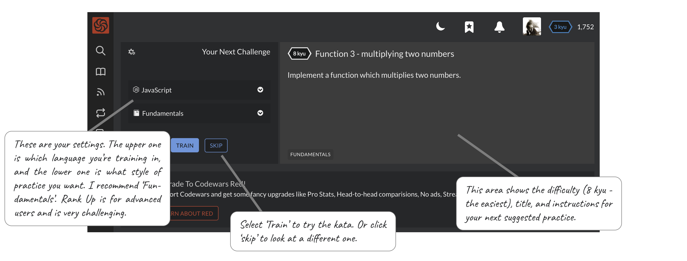
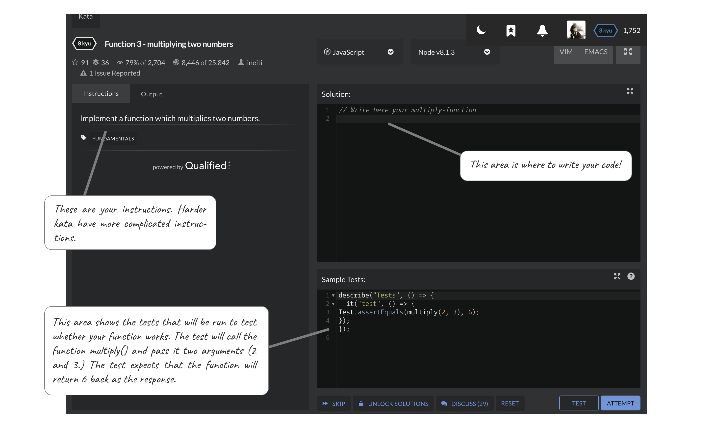
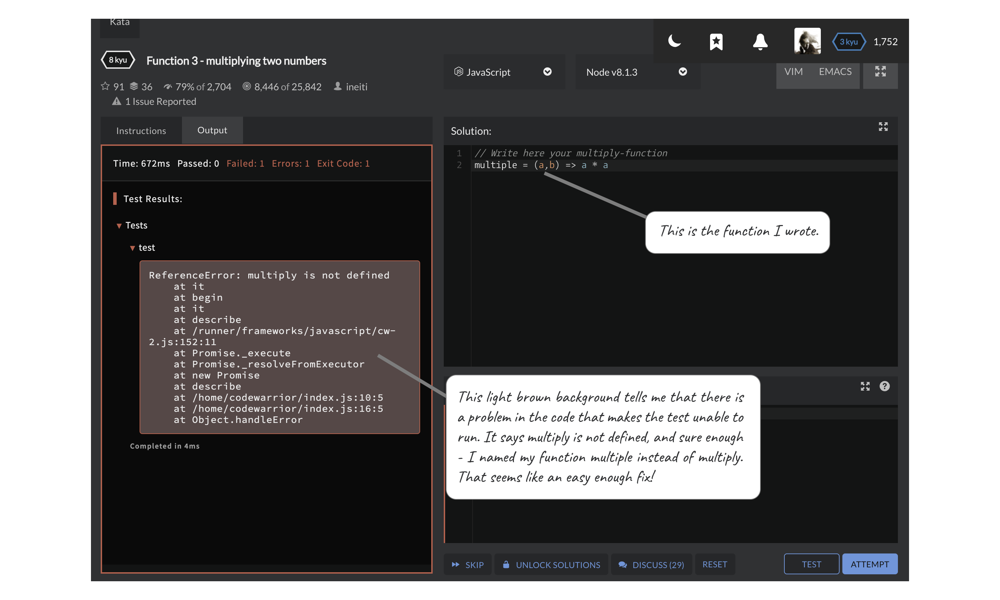
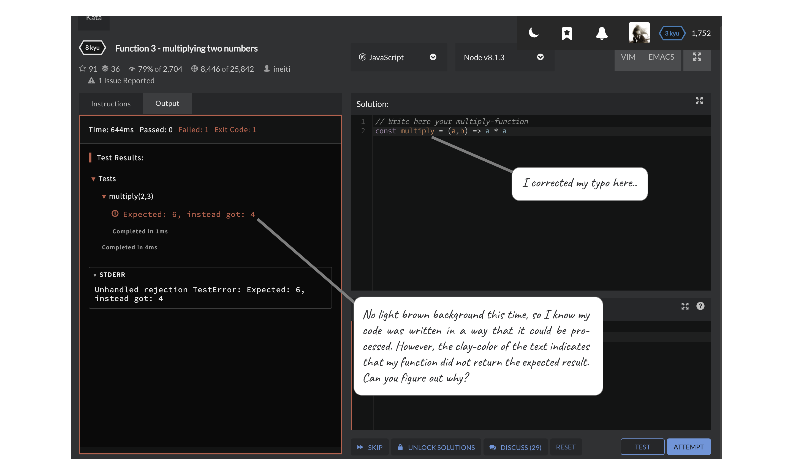
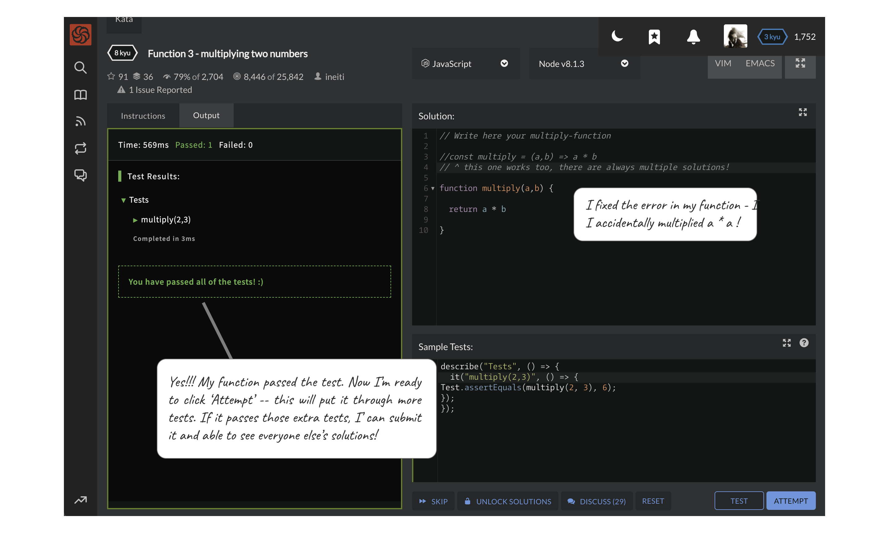
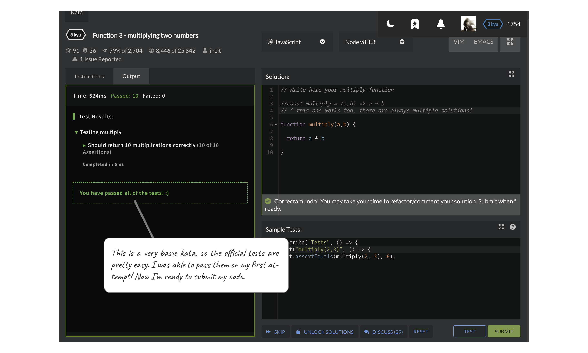
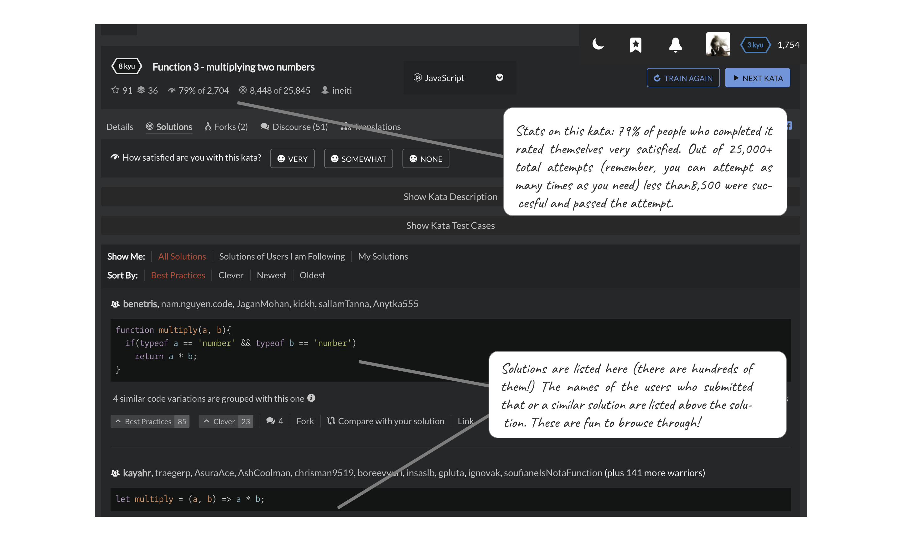

(You can still practice even if you don't make an account - you just can't see other peoples' solutions.)
This is the main screen you'll see when you log in.

When you click on practice, you'll be taken to the training page. This should look pretty similar to NextTech - instructions on the left, and your coding area in the upper right. At the lower right, instead of a browser window, there will be a 'testing' section which shows how your code will be tested (and you can add your own tests if you want.)

Below, I've written my function and clicked test, but I got an error. Whoops! The light brown background means that there is something wrong with my code. The very first line of the message tells me 'multiply is not defined' ... if you look at my code it appears I've accidentally named my function 'multiple' instead of 'multiply'. The test is trying to run the function multiply(), but there is no function named multiply in my code for it to find!

A big thing that I like about Codewars is that the test results section is color coded to make it a lot clearer what is going wrong - whether the code or tests are not able to run (those errors will have a light brown background) or whether the function is running OK but is returning the wrong answer (the next few screenshots cover how test results appear).
Alright, I've fixed the typo and now my function is named correctly. I clicked 'Test' again, and this was the output. The orangish color of the text immediately tells me that my function did not return the result that was expected. The results say that the test expected a result of 6 but that when the function actually ran (with the arguments 2 and 3), it returned a result of 4.

After looking at my code, I noticed that I had intended to multiply a * b but actually wrote a * a instead. An easy fix! I clicked 'Test' again, and got the news that my function passed the test! Now I'm ready to click 'Attempt', which will subject it to more tests, some of which might test edge cases or unusual situations.

I clicked 'Attempt' and - lo and behold - it worked! The 'Attempt' button has now turned into a 'Submit' button, which I can click to submit my solution to the database of solutions for the kata. For each kata there are thousands of people who have submitted solutions - don't be shy about submitting yours!

Here you can see all of the solutions that people submitted for the kata. These are helpful because they will introduce you to new methods and operators that haven't been (and won't be) covered in class. Seeing these new methods in the context of a problem I have already solved helps me to understand why they might be relevant to me in the future.
The top of the solutions page has some interesting stats about the kata itself. (If you hover over them, a tooltip pops up that explains them.)
The most interesting one for me is that this kata has been attempted 25,845 times... and less than 8,500 of those attempts were successful. On average, people needed to 'Attempt' this kata three times before they passed. There are thousands of people who wrote a version of this function that could not pass 10 multiplication tests even after several attempts - and many of them are employed as developers. So, you should never feel bad if you didn't pass on the 1st, 10th, or even 100th attempt. All that matters is that you got it in the end and stuck with it.

From here, if you would like to go back and try a new way of solving the kata exercise, you can click on "Train Again" at the upper right. You can also attempt another kata if you want! (Click on 'Next Kata'.) The site recommends doing one at a time... ideally one every day. If you want to go at warp speed, I recommend setting aside a certain amount of time and seeing how many you can complete in that time, rather than limiting yourself to just one!